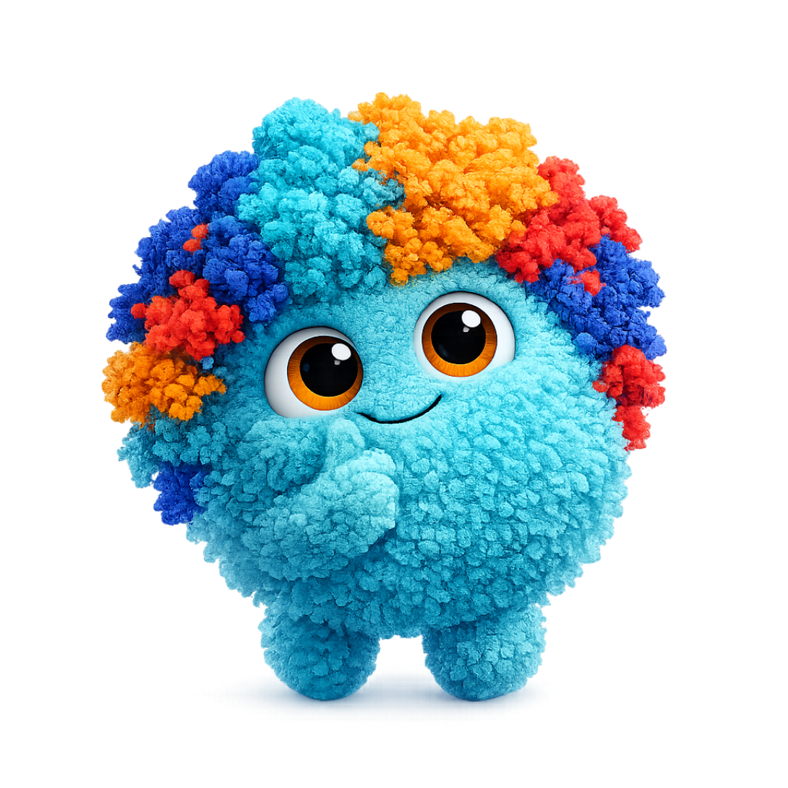

One skeleton. Many faces. Zero forks.
The shared system behind every Blackpaw & Hakiqa app. Values live in one place, components read a semantic layer, and each app's identity is a single attribute away — so the family stays consistent while Finance, Planner, Flamex and BICC keep their own character.
The shared palette
Every verticals screen, plus Connect, Admin and Firstlight, wears this one skin. Values are stored as HSL channel triplets in brand.css — the only file allowed to hold a raw color.
@blackpaw/ui repo. The page background is a clean pure white #FFFFFF — the local design_system.html warm cream #F6F7F4 should be retired in favour of it.Three fonts, three roles
If it's a number you want people to feel — use Newsreader. If it's a word that categorises the thing above or below it — use Manrope. Everything else is Urbanist.
Radius, motion & elevation
Shared primitives keep the family feeling like one hand made it. Cards are always 16px. Anything that enters the screen uses --bp-dur-enter with the spring ease.
The semantic layer is the unlock
Components never reference --bp-teal directly. They read a thin semantic layer — --color-accent, --color-bg, --color-ink… Change those once per app and everything reskins.
Raw layer
--bp-* holds values. Lives only in brand.css. Nobody styles against it.
Semantic layer
--color-accent & friends point at raw tokens. Components consume only this.
Identity layer
[data-identity] re-points the semantic layer. One attribute = one app's whole look.
Five identities, one component set
Everything below is the same markup. Switch the identity and watch the semantic layer repaint it — no component forks, no duplicate stylesheets. The shared skin covers all verticals; Finance, Planner, Flamex and BICC are the only special cases.
KES 1.28M booked
Up 14% on last week across 42 active jobs. Three clients are awaiting final fitting before pickup.

No messages yet
When a client replies, Haki will bring it here first.
Tier-1 components
Build these first — they carry the most duplication across apps today. Each one reads the semantic layer, so it lands identity-correct wherever it's dropped.
HeroHeader
Manrope eyebrow, Newsreader heading, body + actions. Variants navy / dark. Seen at the top of the preview.
KpiCard
Gradient top-bar (accent-h→accent), Newsreader value, sparkline, trend chip. Consolidates hq-kpi-card + MetricCard.
StatusChip
Manrope label-sm, optional pulsing dot for live states, tones from the signal tokens. Replaces inline badge spans.
DetailDrawer
Slides in on --bp-dur-enter + ease-out, navy 50% backdrop with blur, sticky footer for actions.
Migration crib
Phase 0 is pure plumbing — no visual change. Each app keeps a thin alias file pointing legacy names at the canonical tokens, then deletes them over time.
| App | Legacy prefix | Canonical | Notes | |
|---|---|---|---|---|
| @blackpaw/ui | --hk-* | → | --bp-* | Rename; keep --hk-* as aliases during migration. |
| hakiqa-connect | --hq-* | → | --bp-* | Already aliased in brand.css — finish + delete. |
| blackpaw-admin | --admin-* / shadcn | → | --bp-* bridge | shadcn vars map onto bp tokens. |
| bp_planner_app | --t-* | → | --color-* | Themes become data-identity="planner" + sub-themes. |
| blackpaw-finance | --brand-* / --bg | → | --color-* | Keep Akili indigo/coral + Playfair as its identity. |
| bp_bicc | shadcn dark | → | --color-* dark | Already on @blackpaw/ui — smallest lift. |
| local demo | #F6F7F4 cream | → | --bp-bg | Retire the warm cream drift. |
The non-negotiables
Short enough to stick on a monitor.
Values only in brand.css
No HSL triplet lives anywhere else, ever.
--color-accent, not --bp-teal
Components always read the semantic layer.
data-identity for a whole look
Never a new stylesheet for a sector.
16px cards, from the token
--bp-radius-lg everywhere, always.
Newsreader for felt numbers
Everything else is Urbanist; labels are Manrope.
Enter with spring
--bp-dur-enter + spring for drawer, toast, modal, sheet.